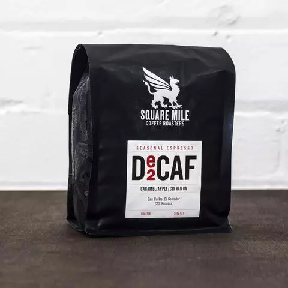
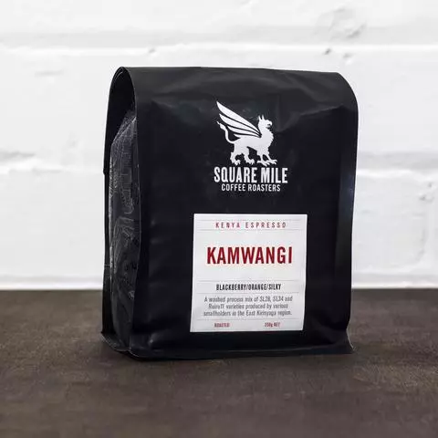
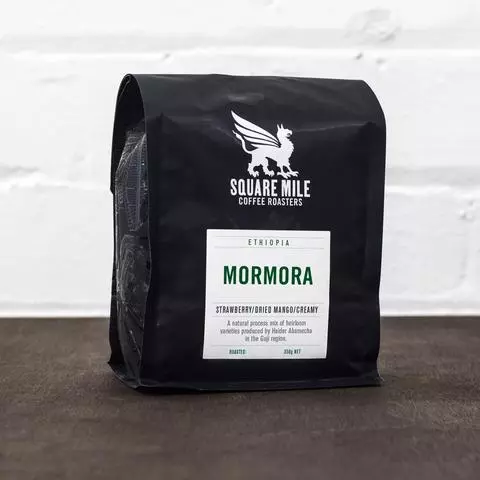
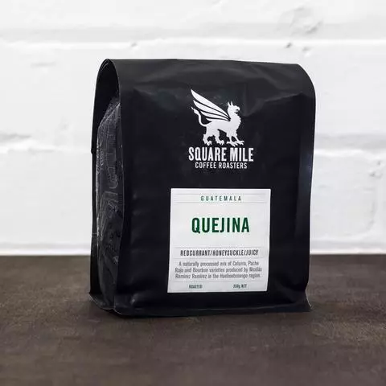

We work with specialty coffee from current crops which is carefully roasted. Our coffee is fruity, juicy and never boring. We bring you the best from leading european specialty roasteries, currently mostly from Square Mile Coffee Roasters, a multi award winning coffee roasting company based in East London. You can currently buy these beans in 350g bags.
Decaf Espresso (El Salvador)
caramel/apple/cinnamon
This is a single origin espresso from San Carlos in El Salvador, think sweet caramel and apple notes alongside sprinklings of cinnamon in the finish.
Kamwangi (Kenya)
blackberry/orange/silky
This is one fruit filled espresso! From citrus fruits, such as orange, grapefruit and clementine, to berries of the black, blue and red variety, this is fruit turned up to 11, all wrapped up in a silky smooth body.
Mormora (Ethiopia)
blackberry/orange/silky
Fruity, sweet notes of dried mango, strawberry and passionfruit sit alongside a delicious creamy mouthfeel making this a tasty summer Ethiopian, hot or cold.
Quejina (Guatemala)
redcurrant/honeysuckle/juicy
Fruity redcurrant and sweet honeysuckle flavours. An incredibly juicy coffee which we struggled to decide on the right berry descriptor, but raspberry, blackberry and blueberry were also in the running!